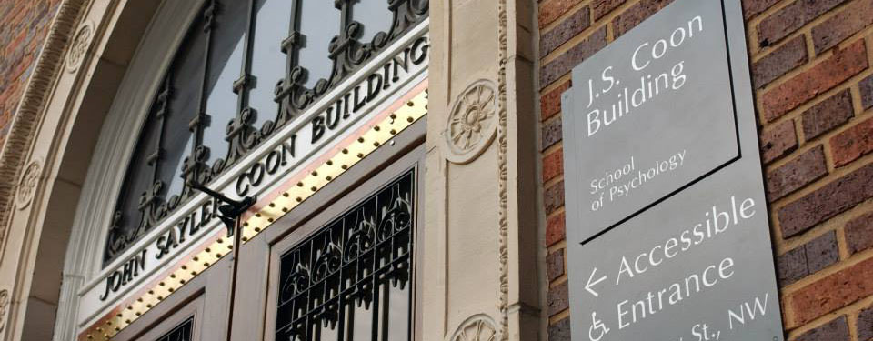

Working as a research assistant for the Cognitive Ergonomics Lab
August 2018 - present  The Cognitive Ergonomics Lab (CEL) is a research lab within the School of Psychology at Georgia Tech that investigates the relationship between humans and their environments.
As a research assistant for the lab I support doctoral student Joel Mumma in research regarding awareness of situational change, and doffing procedures in healthcare environments. I have created assets for the studies, run participants
through the experiments, and have assisted with data collection, organization, and analysis.